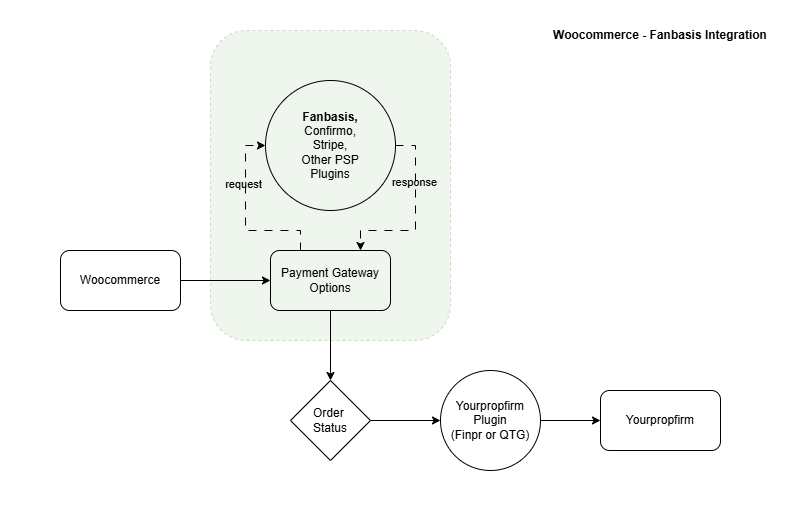
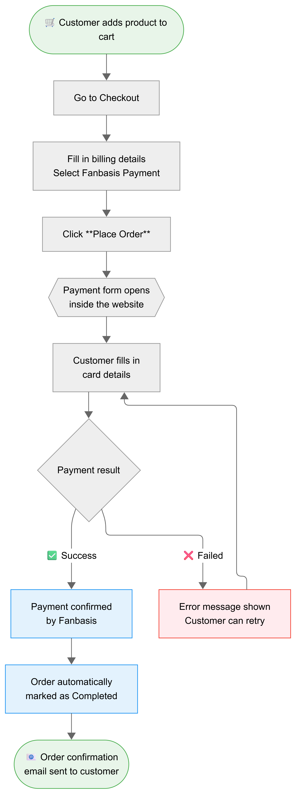

WooCommerce payment gateway integration with Fanbasis — embedded checkout, webhook confirmation, and automatic order completion.
Yourpropfirm Fanbasis is a WordPress plugin that connects your WooCommerce store to the Fanbasis payment platform. It adds Fanbasis as a selectable payment method at checkout, embedding the payment form directly inside your website so customers never leave your store to complete a purchase.
Once a customer pays, Fanbasis sends a real-time notification (webhook) to your store. The plugin validates it and automatically marks the WooCommerce order as completed — no manual action required.
Requirements WordPress 3.0.1+, WooCommerce, PHP 5.4+. No build tools or external dependencies needed.
This diagram shows how Yourpropfirm Fanbasis sits within the broader WooCommerce ecosystem — connecting the payment processor to the WooCommerce gateway layer, and feeding confirmed order status to the Yourpropfirm plugin (Finpr or QTG) for downstream processing.
WooCommerce · Fanbasis · Yourpropfirm Plugin connections

The store platform. Manages products, checkout, and order lifecycle. Yourpropfirm Fanbasis registers itself here as a payment gateway option.
The payment processor. Handles the secure payment form, card processing, and sends a webhook back to your store when a payment is confirmed or fails.
Downstream plugin (Finpr or QTG) that reads the WooCommerce order status to provision trading accounts or trigger other business actions.
From the moment a customer adds a product to their cart to the order confirmation email — here is the complete journey.
Cart to Order Confirmation

Customer browses the store, adds a product, and proceeds to the WooCommerce checkout page.
Customer fills in billing details and selects Fanbasis as the payment method, then clicks Place Order.
The Fanbasis payment form opens directly inside your website (popup modal or in-page). Billing details are pre-filled automatically from the WooCommerce order — the customer only needs to enter their card details.
The customer submits the payment. Fanbasis processes it securely and returns a result.
Success: Fanbasis notifies your store via webhook. The plugin validates the payment and marks the order as Completed.
Failed: An error message appears inside the form. The customer can correct their details and try again without restarting the checkout.
Customer is redirected to the WooCommerce order-received page and receives a confirmation email.
Webhook confirmation happens automatically. There is no manual step — your store receives and validates the payment notification in the background, then updates the order status instantly.
Choose how the Fanbasis payment form is presented to your customers. Both methods keep the customer on your website throughout the entire payment process.
The payment form opens as a full-screen overlay on the WooCommerce checkout page. No redirect — customer stays on the checkout page.
The payment form renders inside the native WooCommerce order-pay page, within your active store theme including header and footer.
form-pay.php template into your themeWC Order Pay Page setup: Copy form-pay.php from the plugin's sources/ folder into your active theme at yourtheme/woocommerce/checkout/form-pay.php.
Fanbasis Hosted JS SDK renders a secure iframe — card data never passes through your server.
Payment events arrive via webhook and orders are completed automatically — no polling or manual steps.
Email, name, phone, and address from the WooCommerce order are pre-populated in the Fanbasis form.
Each billing field can be set to Locked (read-only), Hidden, or Editable per your store's requirements.
Customise the SDK form: theme, accent color, background, border, input, label, heading, and more.
The plugin registers your webhook with Fanbasis automatically when you save settings — no manual setup.
Simple and Advanced log modes via WooCommerce Logger — view all payment events in one place.
Fully compatible with WooCommerce High Performance Order Storage (custom order tables).
All settings are found at WooCommerce → Settings → Yourpropfirm Fanbasis.
| Setting | Description |
|---|---|
| Fanbasis API Key | Your private API key from the Fanbasis dashboard. Validated automatically on save. |
| Environment | Sandbox for testing, Live for real payments. |
| Creator ID | Your Fanbasis account slug (e.g. ypf). Required for embedded checkout. |
| Webhook Status | Shows registration status, signature secret presence, environment, and webhook URL. |
| Setting | Options | Description |
|---|---|---|
| Checkout Method | Popup Modal WC Order Pay Page |
How the Fanbasis payment form is displayed to the customer. |
| Verify Payment Method | Webhook / Thank You Page / Both | How the plugin confirms payment. Both uses webhook as primary with cron as fallback. |
| Thank-you Page Mode | Immediate / Wait for Payment | Immediate: redirect to order-received straight away. Wait: show overlay until webhook arrives — useful for GTM / analytics events. |
| Setting | Default | Description |
|---|---|---|
| Enable Logs | Off | Write activity logs to WooCommerce → Status → Logs. |
| Log Mode | Simple | Simple: key events only. Advanced: full API payloads and responses. |
| Show Payment Method Column | On | Adds a Payment Method column to the WooCommerce orders list. |
| Show Fanbasis Meta on Order Detail | On | Displays Fanbasis session ID, transaction ID, and payment status on the order detail page. |
Control how each billing field behaves inside the Fanbasis checkout form. Pre-filling ensures a smooth experience — the customer only needs to enter their card number.
| Field | Default | Options |
|---|---|---|
| Locked |
Locked — pre-filled from WC order, not editable Hidden — hidden from form; data still sent to Fanbasis Editable — shown as a normal editable field | |
| First Name | Locked | |
| Last Name | Locked | |
| Phone | Locked | |
| Address (all sub-fields) | Locked |
Customise the Fanbasis checkout form, popup modal, and processing overlay to match your store branding.
| Section | Controls |
|---|---|
| Fanbasis Form | Theme (Light/Dark), Accent Color, Background, Surface, Border, Input, Label, Heading, Secondary & Product Text colors · Show Product Info, Product Layout, Billing Form Placement · Show/hide Coupon Row, Powered By, Section Headings |
| Modal | Backdrop color, Container background, Header background, Header title color, Header subtitle color, Spinner color |
| Overlay | Enable/disable overlay (default: off) · Background, Spinner, Title, and Subtitle colors |
yourpropfirm-fanbasis-debug. Make sure Enable Logs is turned on under Additional Settings. Use Advanced log mode when debugging — it shows full API payloads and responses.
payment_complete() and then sets the order status to Completed. A standard WooCommerce order note is automatically added with the transaction ID.